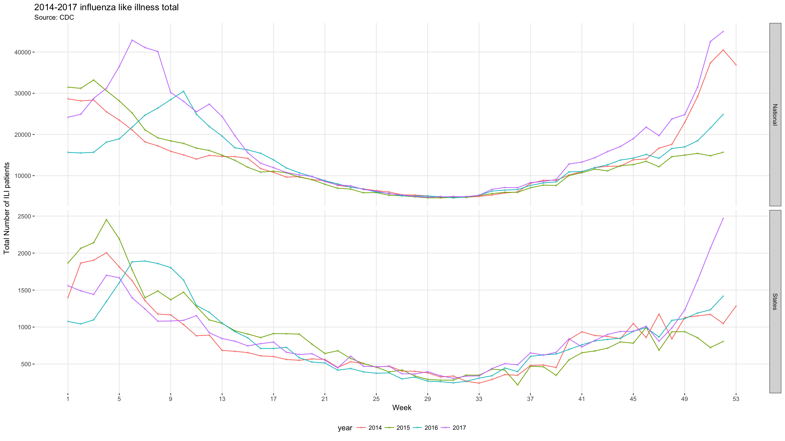
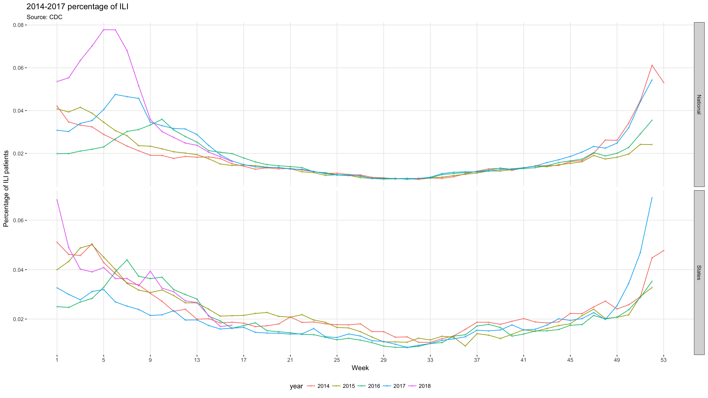
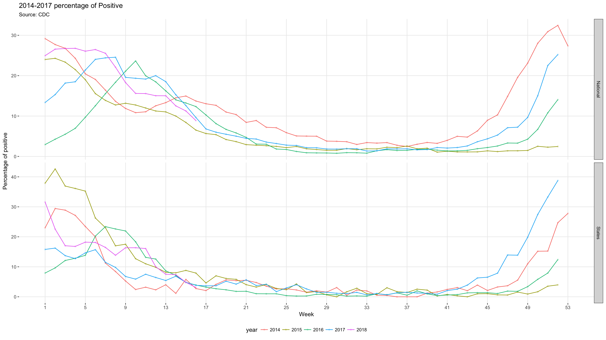
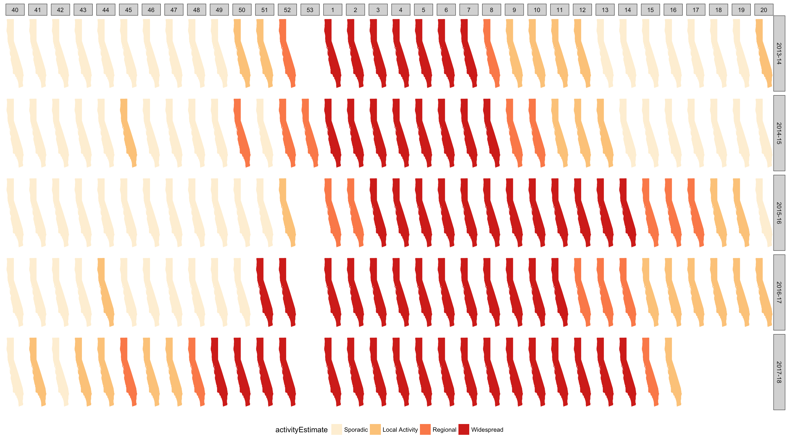

For more detailed influenza cases report, please go to https://www.cdc.gov/flu/weekly/


From the two charts above, a clear pattern can be observed. Normally, the number of ILI reported starts to increase at around week 40, and decrease at week 6 or 7. The peak value of each year varies but will normally in late December or early January. Year 2017 was off across the nation, the flu spreaded too fast, and the ILI reported surpassed 2016/2017 season’s peak in the thrid week of December and then reached a historical high in the next week. California’s condition was even worse than the nation, the number of ILI almost double compare to the same time in the last three year.
The following two graphs will verify the inference made above.
This graph demostrates the percentage of clinical test result of being flu-positive across different weeks of the past 5 years.

This graph showed the avtivity estimates of California state. The darker the color, the more severe flu spreaded.
